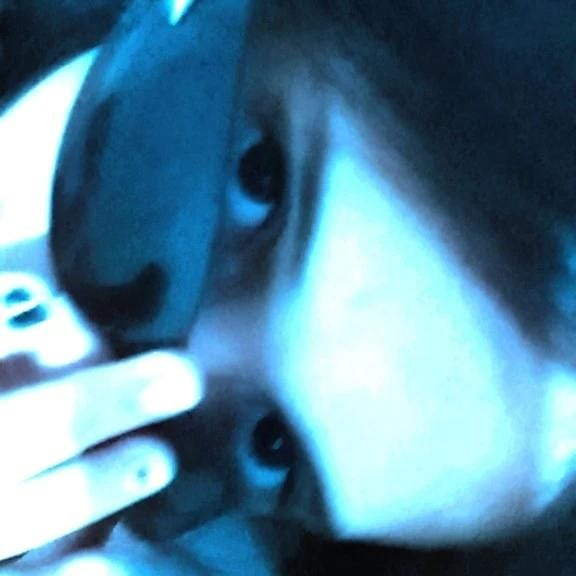
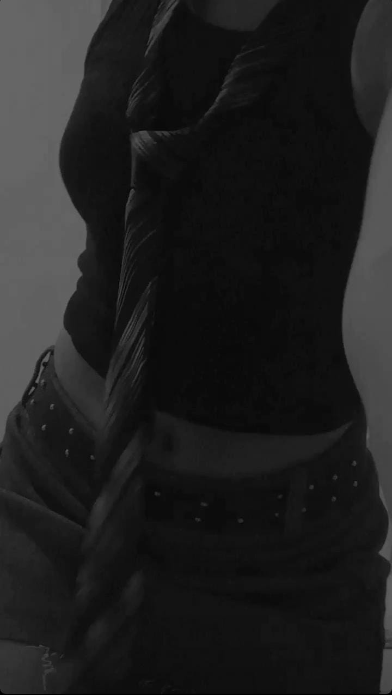
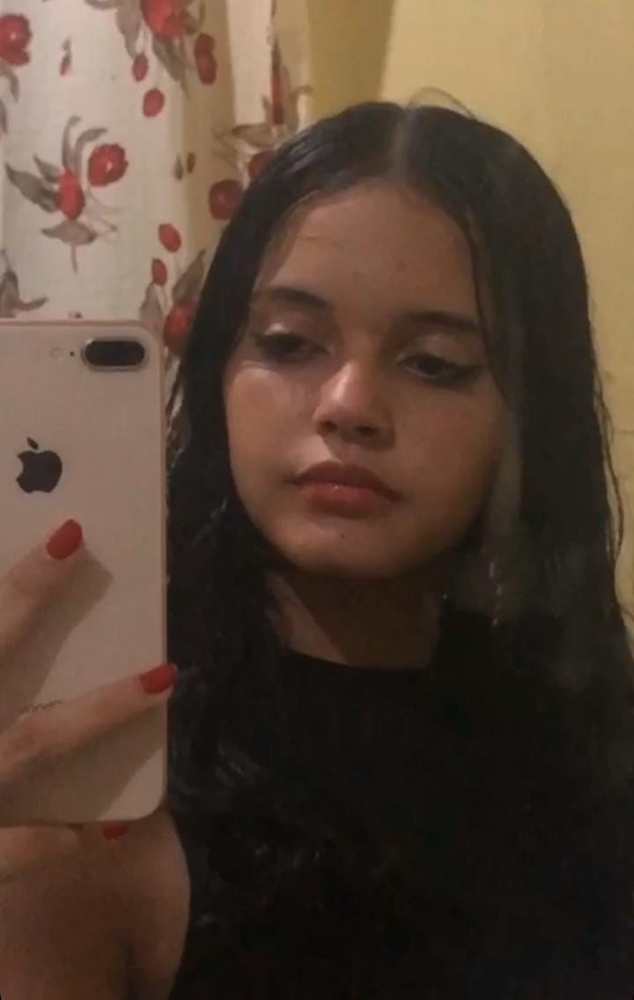
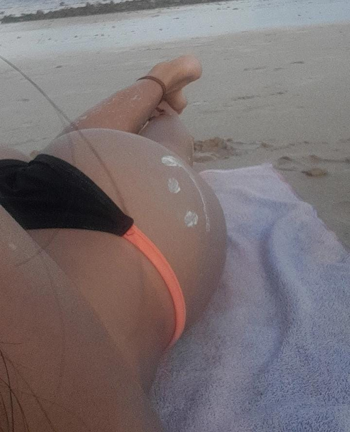

Bem, não sei por onde começar, mas acredito que contando uma história seria o melhor jeito de iniciar
a um tempo atrás tomei a decisão de focar inteiramente no meu crescimento como pessoa,onde eu só sabia
estudar e trabalhar, cheguei a dizer que jamais eu me interessaria por alguém, gostar e conversar com uma
pessoa era apenas perca de tempoe eu fazia tudo para evitar que isso acontecesse. Até que em um dia,
voltando do trabalho,eu vi uma menina baixinha e de pela clara,o que me chamou atenção nela é que ela era
muito diferente das meninas daqui, eu já tinha a certeza que veio de fora, na minha cabeça ou era novata ou
só estava de passagem mesmo.

Apesar dela ter me chamado atenção, eu não reparva muito nela, pois na minha cabeça ela devia ter uns 14 anos no máximo, dai eu a via e meio que era indeferente no meu dia a dia, até que um dia voltando do serviço eu tomei por decisão de cortar o cabelo,enquanto eu aguardava na barbearia, essa garota passou bem dizer na minha frente,então como eu perebi que iria demorar para cortar os cabelos dos dois que estavam em minha frente, eu decidir ir na casa de Thiago tomar um copo de café, já que eu amo café, não tenho duvidas que esse foi o melhor café que tomei.Pois chegando na casa de Thiago eu me deparei com a menina bonita,fiquei meio tímido, já que ela estava bem na minha frente,ao entrar na casa de Thiago, Thalita foi preparar café pra mim, então eu comecei a falar da garota pra Thalita, em tom de brincadeira eu disse que a menina tinha 11 anos, então Thalita disse "Jayane tem 17 anos", na hora eu fiquei incredulo e percebi que eu já estava interessado na menina,mas eu negava isso pra mim mesmo pois eu pensava que a menina era muito nova, mesmo assim eu tenteu ignorar esse interesse,então chamei Thiago para ir pra barbearia comigo, chegando lá cada vez que eu tentava ignorar a menina, mas eu pensava nela, então eu perguntei a Thiago qual era o instagram dela, Thiago não sabia, então eu tentei procurar nos seguidores de Thalita, porém não encontrei. Então eu mandei menssagem pra Thalita pergutando qual era o instagram da menina e a menina estava do lado de Thalita,então Thalita passou o instaram da garota, do nada Thalita chegou com uma historia que a menina queria ficxar comigo, eu não acreditei,pois acredito que essa garota é demais pra mim e além disso eu não confio muito em Thalita,mas no decorrer da conversa thiago percebeu que Thalita não estava mentindo, dai minha ficha caiu.
quando eu sair da barbearia eu estava muito ancioso, a ponto de passar na casa de Thiago quase 10 horas da noite, para falar com Thalita, mas como eu sou muito azarado, eu descobrir que a menina iria embora sábado,até ai tudo bem, já que era terça e eu teria 3 dias para conhece-la melhor,mas como o que é ruim na minha vida pode piorar, piorou da pior forma, já que eu cheguei em casa, mandei mensagem e Ela disse que iria embora na quartar, eu fiquei muito frustado com isso. Com isso eu cometi dois grandes erros, o primeiro foi me apaixonar por alguém que mora a cerca de 500 km da minha cidade,sem ao menos conhecer a garota e eu fui mais além, me apaixonei duas vezes por ela, já que segunda foi pelo o jeito dela,as conversas delas são prazerosas e eu me sinto a vontade, é melhor do quer conversa com meus amigos, conversando com ela,eu revelo minha real indetidade, ela é o equilibrio dos meus dias, ela quebra o meu mundo sistematico,onde com ela parece que não existem regras. Sei que é loucura gostar de uma pessoa que não posso ver e que talvez eu não vou ver nesse ano,só sei que estou disposto a ser taxado como louco e a esperar 10 anos se for possivel, para me encontrar com ela.
 